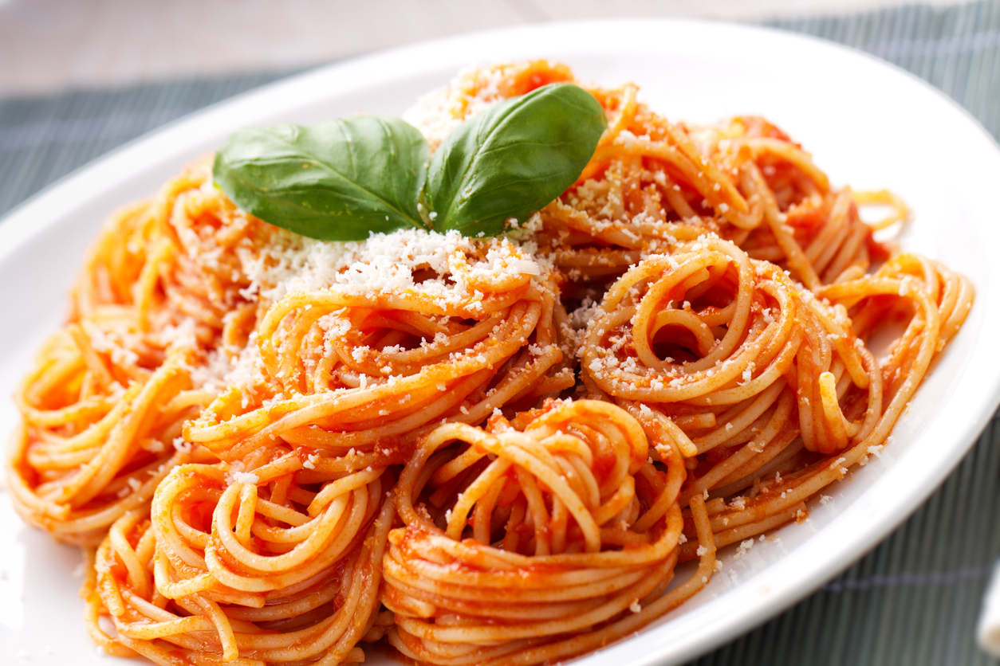

A culinária italiana é uma das mais saborosas do mundo. Com pratos que envolvem os mais variados tipos de vegetais, carnes e massas, não há quem resista aos encantos desta gastronomia.
Todo este sabor tem origem na própria história do país. Com o passar dos séculos, a história e a culinária italiana evoluíram juntos.
Spaghetti: Espaguete ou esparguete (Italiano: [spaˈɡetti]), também chamado de macarronete, é uma massa alimentícia longa, fina, sólida e cilíndrica. É um alimento básico da cozinha tradicional italiana. Como outras massas, o espaguete é feito de trigo moído, água e às vezes enriquecido com vitaminas e minerais.
Pizza (português brasileiro) ou piza (português europeu) é uma preparação culinária que consiste em um disco de massa fermentada de farinha de trigo, coberto com molho de tomate e os ingredientes variados que normalmente incluem algum tipo de queijo, carnes preparadas ou defumadas e ervas, normalmente orégano ou manjericão, tudo assado em forno.
O termo pizza foi registrado pela primeira vez no ano de 997 d.C., em um manuscrito em latim da cidade do sul da Itália de Gaeta, em Lazio, na fronteira com Campânia. Raffaele Esposito é frequentemente creditado por criar a pizza moderna em Nápoles. Em 2009, a pizza napolitana foi registrada junto à União Europeia como um prato de especialidade tradicional garantida. Em 2017, a arte de fazer pizza napolitana foi adicionada à lista de patrimônio cultural imaterial da UNESCO.
Pizza e suas variantes estão entre os alimentos mais populares do mundo. Pizza é vendida em uma variedade de restaurantes, incluindo pizzarias (restaurantes especializados em pizza), restaurantes mediterrâneos, via entrega e como comida de rua.